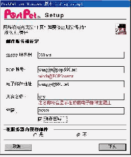
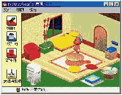

由汤姆·汉克斯和梅格瑞恩联手“演绎”的对《伊妹传情》把一段网恋的故事描绘得出神入化，现代新的E－mail软件更让一对网上网下的情侣们温馨不已。这里要讲到的就是一个情侣专用E－mail软件——PosTpet。
PosTpet里有只宠物，它可以帮助传送你们之间那些甜蜜的私语，所以你必须饲养它和陪它玩。 当它为你送信时，便会离开房间出现在对方的宠物房间里。此时，对方的主人还可以跟它玩或给它点心吃，回家后你的宠物会自己写日记，例如：“我今天到nabob
家玩，他爸爸给我糖果吃，也一直用力摸人家的头，害我都快跌倒了！”宠物本身会因为不同的“饲养”方法而逐渐培养自己的个性，不开心时还会拒食，甚至离家出走呢。这个软件使全日本的情侣为之疯狂，多数的情侣在约会后回家还让自己的宠物去向对方道声晚安。
1．安装
PosTpet的安装很简单，运行自解压程序，然后随安装向导一步步操作就可以了。安装时会出现两个设置的菜单，系统设置菜单需要设置一些参数（图1），包括SMTP服务器名（即发信的服务器）、POP3账号（按照提示的格式输入）、电子邮件的地址、真实姓名，收取邮件的密码等，根据提示输入即可。在服务器内保存邮件建议选“不”，否则每次收信时都会把以前收过的信重收一遍。
另外还有一个宠物设置菜单，这里可以选择你想养的宠物，一共有四种，试用版只能选泰迪熊。根据提示输入宠物名称、性别、你的名字及你的生日。右边的图形表示你的宠物的特征参数，这个参数是随机的，它们对你的宠物的性格起作用。
2．使用
PosTpet的界面如图2所示：其中“照顾”菜单包括宠物状况、给宠物洗澡、喂东西等功能，由于你的宠物的性格完全是你培养的，如果它各种状态都很好的话，它会很勤快地给你送信，甚至寿命也会变长；如果它一直很不高兴的话就可能离家出走，所以要好好对待它。“设定”菜单包括设定、签名和通讯录等功能。
 3．用你的宠物送信 3．用你的宠物送信
在“新邮件”中写好你要发的新邮件（图3），然后点击右上角的“呼叫宠物”，你的宠物就会帮你送信。如果收信人也安装了PosTpet软件，你的宠物就会跟他养的宠物玩，对方也可以给你的宠物一些东西吃。是不是很有意思呢？不过要注意的是如果对方没有使用PosTpet软件或你的宠物送信还没回来，你就只能使用“呼叫邮差”来发信了。
看完上面的介绍你感觉好玩吧，PosTpet的确是个很好使用的软件。如果你感兴趣的话可以到http://nabob.yeah.net下载PosTpet 1.2版及汉化文件。
（南京 汪嘉阳）
|